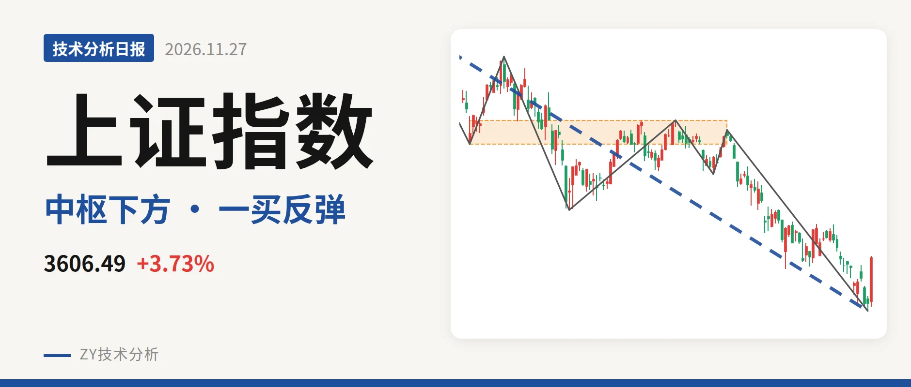
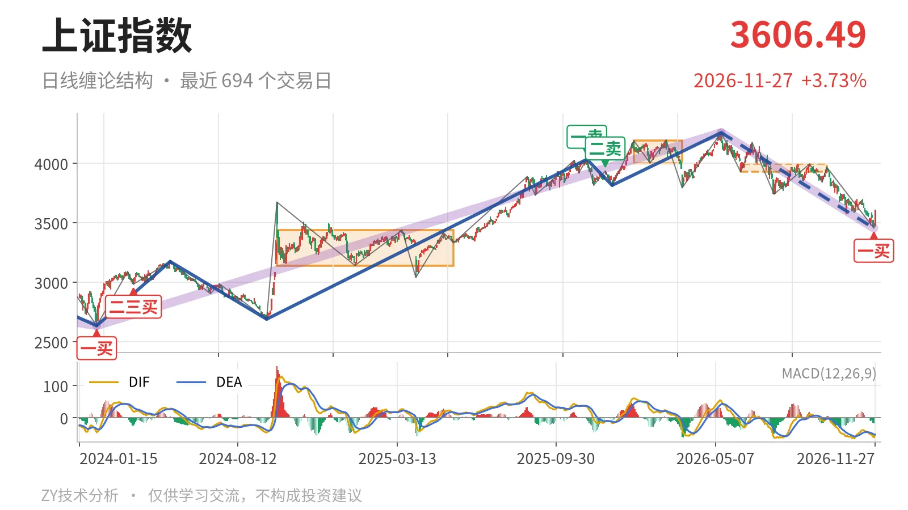
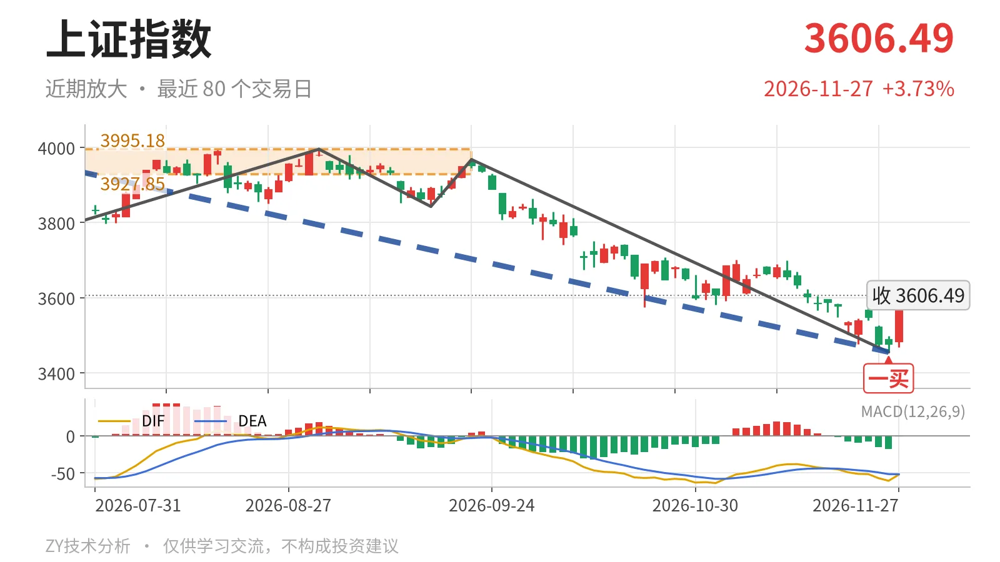

上证指数｜一买后反抽 3928点一线是关键

最近日线中枢 3927.85—3995.18点，收盘位于中枢之下
一句话：日线下跌段未结束，反弹力度偏弱，关键看3927.85点能否拉回。
📉 走势结构：日线下跌段还在延续，更大级别上涨未被破坏
当前处在5月14日以来的日线下跌线段中，该线段从4258.86点下行至3455.04点，内含7笔，仍无结束迹象。更大级别看，2024年2月5日至2026年5月14日的上涨段从2635.09点涨到4258.86点，上涨约61.6%，结构未被破坏；5月14日至11月26日的下跌段更像这段上涨后的回落。同时，2021年7月28日至2023年5月9日的线段中枢上沿在3418.95点，11月26日低点3455.04点尚未跌破该上沿。所以，大级别上涨未坏，日线下跌段未改。

🧭 中枢与位置：最新价在最近中枢下方，中枢已下移
最新收于3606.49点，位于6月8日至9月22日形成的日线笔中枢（3927.85—3995.18点）下方，低于下沿约8.2%，折合约321点。这个中枢之前，1月14日至3月23日的中枢中轴约4097点，到了6月8日至9月22日中枢中轴约3962点，中枢下移。当前反弹只是单日拉回3606.49点，尚未触碰3927.85点下沿，仍属中枢下方运行，距离回到震荡区还有一段。
📍 买卖点：11月26日一买属笔级别，前高两个卖点已被破坏
2025年11月14日一卖4034.08点、2025年12月8日二卖3936.31点之后，5月14日创出4258.86点新高，两个卖点被破坏，只对应日线笔级别。11月26日一买3455.04点所在下跌笔已经结束；11月27日单根K线最低3467.41点、最高3610.72点，收在3606.49点，使该一买以日线笔级别成立，但并未升级为线段级别买点。反弹尚未成笔，一买之后的力度还需进一步展开。

⚖️ 背驰：最后一跌是新低但力度更强，日线背驰不成立
比较9月22日至11月26日下跌笔与6月23日至7月20日下跌笔。前者从3967.68点跌至3455.04点，绿柱面积505，DIF低点-64.0；后者从4175.35点跌至3741.11点，绿柱面积289，DIF低点-61.8。价格创出新低，但绿柱面积反而放大，DIF低点也继续走低，这是“新低但力度更强”，不是“新低不新弱”。日线笔间没有出现标准背驰，因此11月26日一买仍停留在日线笔级别，日线下跌段的结束没有被这段下跌力度证明。
🔍 关键位置观察：3928点一线为反弹分水岭，3455点为防守位
若当前反弹不能拉回3927.85点上方，结构上构成对6月8日至9月22日中枢的三卖，日线偏弱；若重新站上3928点一线，则下跌更可能转为中枢扩展，回到震荡区。3455.04点作为11月26日一买低点，若再次跌破，则日线下跌线段延续；若守住3455点，反弹笔可继续。当前最新DIF为-52.6，仍在零轴之下，收盘低于中枢下沿约8.2%，整体判断偏弱。
⚠️ 本文为基于公开行情数据的缠论技术结构记录，由程序自动计算并生成，仅供学习交流，不构成任何投资建议。市场有风险，投资需谨慎。